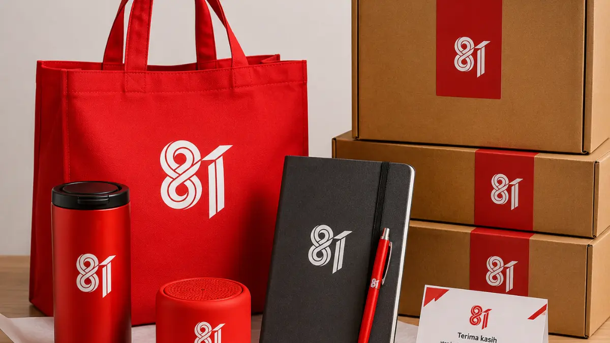

Rekomendasi Merchandise Kantor Teknologi untuk Corporate Gift
Merchandise berbasis teknologi tersedia dalam lima varian yang siap dicetak logo perusahaan dan cocok dijadikan corporate gift fungsional.
Kategori ini banyak dipilih karena langsung dipakai penerima dalam aktivitas kerja sehari hari, sehingga branding perusahaan lebih sering terlihat.
- Powerbank custom logo dengan pilihan kapasitas untuk kebutuhan mobilitas kerja
- Flashdisk custom bentuk kartu untuk distribusi materi digital perusahaan
- Speaker bluetooth mini custom logo sebagai merchandise premium bagi klien
- Lampu meja LED custom logo untuk kebutuhan kerja di kantor maupun rumah
- Charger multi port custom logo yang praktis dibawa saat perjalanan bisnis
Rekomendasi Merchandise Kantor Pakaian dan Aksesoris Kerja
Merchandise berbentuk pakaian dan aksesoris tersedia dalam lima pilihan yang cocok untuk kebutuhan seragam acara maupun identitas tim perusahaan.
Kategori ini efektif digunakan saat gathering, outing, atau acara internal yang membutuhkan kekompakan visual tim.
- Kaos polo custom logo untuk seragam kebersamaan acara perusahaan
- Topi custom logo sebagai pelengkap outdoor maupun gathering
- Jaket custom logo untuk merchandise musim tertentu atau acara khusus
- Lanyard custom logo untuk kebutuhan identitas karyawan dan tamu acara
- Pin logam custom logo sebagai aksesoris tambahan yang ringkas

Rekomendasi Merchandise Kantor Alat Tulis dan Perlengkapan Kerja
Merchandise berbentuk alat tulis dan perlengkapan kerja tersedia dalam lima pilihan yang mendukung aktivitas administratif harian di kantor.
Produk pada kategori ini cocok digunakan sebagai pelengkap seminar kit maupun souvenir meja kerja untuk klien dan karyawan.
- Notebook custom logo dengan pilihan cover polos maupun premium
- Pulpen metal custom logo sebagai pelengkap standar merchandise kantor
- Map dokumen custom logo untuk kebutuhan administrasi acara perusahaan
- Sticky note custom logo sebagai merchandise ringkas dan fungsional
- Kalender meja custom logo untuk kebutuhan tahunan Perusahaan
Rekomendasi Merchandise Kantor Minuman dan Hadiah Fungsional
Merchandise kategori minuman dan hadiah fungsional tersedia dalam lima pilihan yang menonjolkan nilai guna tinggi bagi penerimanya.
Kategori ini sering dipilih karena dapat digunakan berulang kali oleh karyawan maupun klien dalam aktivitas harian.
- Tumbler custom logo sebagai merchandise andalan hampir semua acara korporat
- Mug custom logo untuk kebutuhan kantor maupun hadiah klien
- Botol minum custom logo sebagai pelengkap aktivitas kerja aktif
- Tempat kartu nama custom logo untuk kebutuhan meja kerja profesional
- Payung custom logo sebagai merchandise fungsional bernilai tinggi
Rekomendasi Merchandise Kantor Tas dan Perlengkapan Bawa
Merchandise berbentuk tas dan perlengkapan bawa tersedia dalam lima pilihan yang mendukung mobilitas karyawan maupun distribusi materi acara.
Produk ini cocok digunakan pada seminar kit, gathering, maupun sebagai merchandise harian yang praktis dibawa ke mana saja.
- Tas ransel custom logo untuk kebutuhan mobilitas kerja harian
- Totebag kanvas custom logo sebagai pelengkap distribusi materi acara
- Tas selempang custom logo untuk merchandise praktis dan ringkas
- Pouch serbaguna custom logo sebagai tempat aksesoris tambahan
- Paper bag custom logo untuk kemasan merchandise yang lebih rapi
Opsi Teknik Cetak Logo yang Tersedia untuk Merchandise Kantor
Vendor Seminar Kit menyediakan beberapa teknik cetak logo yang disesuaikan dengan jenis material merchandise kantor yang dipilih perusahaan.
Pemilihan teknik yang tepat memengaruhi daya tahan logo, terutama pada produk yang sering digunakan seperti tumbler, kaos polo, dan tas.
"Pemilihan teknik yang tepat memengaruhi daya tahan logo, terutama pada produk yang sering digunakan seperti tumbler, kaos polo, dan tas."
— Asher Angelica, Penulis Merchandise Kantor
- Sablon manual untuk produk berbahan kain seperti kaos polo dan totebag
- UV printing untuk produk berbahan plastik dan logam seperti powerbank dan flashdisk
- Bordir logo untuk produk pakaian seperti topi dan jaket
- Laser engraving untuk produk berbahan logam dan kayu seperti tumbler dan Kalender meja

Segera Wujudkan Merchandise Kantor Custom untuk Perusahaan Anda
Kami siap membantu tim HR dan procurement menyiapkan merchandise kantor custom logo yang sesuai kebutuhan acara dan anggaran perusahaan.
Hubungi tim kami sekarang untuk konsultasi kategori produk, simulasi harga per unit, dan estimasi waktu produksi.